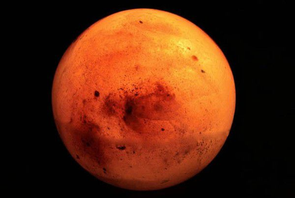
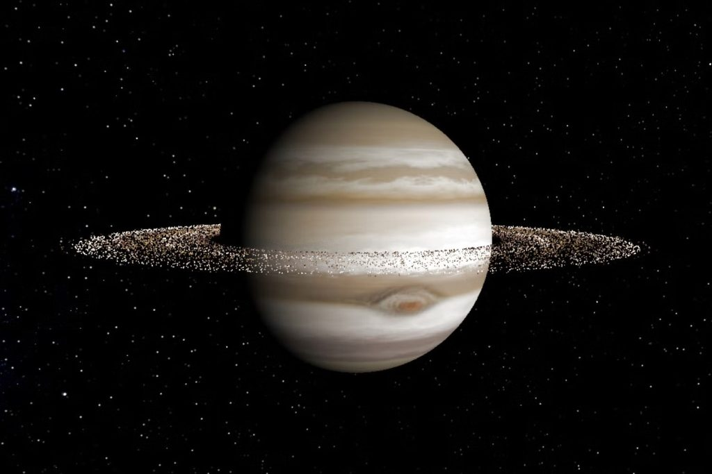
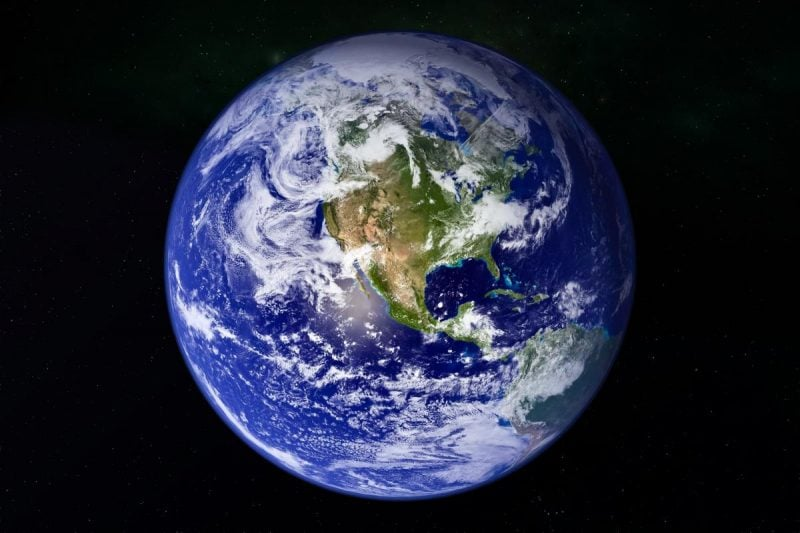

Марс
Червона планета з каньйонами та пиловими бурями.

Юпітер
Найбільша планета Сонячної системи з Великим Червоним Плямою.

Сатурн
Відомий своїми кільцями та газовою атмосферою.

Земля
Єдина планета з підтвердженим життям та океанами.